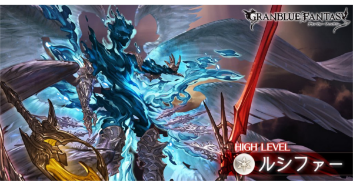

ルシファー
6人本
特動表
被動效果
| 福音の赫刃 | 對應赫刃Lv增加敵人的攻擊性能 •Lv1以上:攻擊力上升 •Lv2以上:DA機率上升 •Lv3以上:普攻付加驅散1個強化效果 •Lv4以上:所有傷害必定為克制屬性傷害 •Lv5以上:無視全屬性cut盾 #敵人本體發動特動時Lv+1 #敵人本體被驅散時Lv-1 |
| 福音の黒翼 | 依據參戰者職業種類數減少我方造成的傷害 每回合回復敵方HP #無法消除 |
CT特動
| 本體 | HP100%~試煉開始前 | 通常 | ポースポロス | 對我方攻擊力最高的角色造成1次大傷害 消除目標所有強化效果 |
| OD | イブリース | 對我方隨機對象造成2次3000多段傷害+2次3W傷害 賦予我方全體1~3T以下效果 •恐怖 •裂傷(傷害等同於最大HP10%) •無法行動 |
||
| 試煉開始後~翅膀死亡前 | アキシオン･アポカリプス | 對我方隨機對象造成3次約3W傷害 赫刃Lv+1 依據赫刃Lv追加效果 •Lv2:敵方本體回復一個弱體效果 •Lv3:消除我方全體所有強化效果 •Lv4:對我方全體追加1W無屬性傷害 •Lv5:我方全體最大HP降低20%(累積) |
||
| 翅膀死亡後 | 通常 | ポースポロス | 對我方當前HP最低(HP相同則改為ATK最高)的角色造成1次大傷害 消除目標所有強化效果 |
|
| OD | オービタル･ブラック | 對我方隨機對象造成3次傷害 賦予我方全體5T暈影效果(無法消除) 依據未解除的試煉追加效果 試煉Ⅷ:我方全體攻擊技能(紅技)CD+2 試煉Ⅸ:我方全體回復技能(綠技)CD+2 試煉Ⅹ:我方全體弱體技能(藍技)CD+2 試煉Ⅺ:我方全體強化技能(黃技)CD+2 | ||
| 本體+翅膀 | OD | パラダイス･ロスト | 對我方全體造成8~9W隨機屬性傷害(無視cut盾) 目標死亡追加無法復活效果 |
|
| 翅膀 | HP100%~51% | 奇數T | マルス | 對我方全體造成暗屬性傷害 消除敵方本體的福音の黒翼效果 賦予我方全體2T禁断の果実效果(1次) |
| 偶數T | フィークス | 對我方全體造成暗屬性傷害 賦予敵方本體福音の黒翼效果 賦予我方全體2T生命の果実效果(1次) |
||
| HP50%以下 | 奇數T | マルス | 對我方全體造成暗屬性傷害 消除敵方本體的福音の黒翼效果 賦予我方全體2T禁断の果実效果(1次) 賦予我方全體2~3T攻擊力下降 |
|
| 偶數T | フィークス | 對我方全體造成暗屬性傷害 賦予我方全體2T生命の果実效果(1次) 賦予我方全體2T亡靈效果 └受到的HP回復轉為傷害 |
||
| 禁断の果実 | 奧義傷害大幅上升 發動奧義受到1W無屬性傷害 |
|||
| 生命の果実 | 使用技能回復我方全體4000HP，敵方本體回復100W | |||
HP特動
| 本體 | 翅膀 | |||||||||
| 翅膀存活 | 翅膀死亡 | |||||||||
| 100% | 'パラダイス･ロスト | 對我方全體造成3W無屬性傷害 賦予敵方本體福音の黒翼效果 賦予我方全體3T以下弱體效果 •無法復活 •無法召喚 |
無 | |||||||
| 95% | ポースポロス | 對我方攻擊力最高的角色造成隨機屬性18倍傷害 消除目標所有強化效果 |
無 | |||||||
| 85% | アキシオン | 對我方當前HP最低(HP相同則改為ATK最高)的角色造成3次隨機屬性傷害 目標死亡對我方全體追加3W無屬性傷害 |
無 | |||||||
| 75% | 無神論 | 清除敵人所有弱體效果 並賦予敵方5分鐘絕對否定效果及永遠拒絕效果 |
無 | 無 | ||||||
| 絕對否定 | 隨機選擇一種屬性，敵方本體受到其餘屬性傷害時，傷害cut50 #敵方本體1T內受到指定屬性1000萬傷害解除 |
|||||||||
| 永遠拒絕 | 隨機選擇一種屬性，其餘屬性對敵方本體的弱體效果皆無效 #敵方本體存在6個弱體效果時解除 |
|||||||||
| 70% | 敵方本體滿CT | セフィロト | 回復敵方全部弱體效果 消除我方全部強化效果 賦予敵方本體終末へのカウントダウン效果 |
|||||||
| 終末へのカウントダウン | 我方有人死亡時，計數器-1，計數器為0時，發動ジ･エンド └全體參戰者全部角色死亡(包含後排) |
|||||||||
| 60% | アキシオン | 對我方全體造成3次隨機屬性3倍傷害 目標死亡對我方全體追加3W無屬性傷害 |
無 | |||||||
| 55% | 敵方本體滿CT | 無 | ||||||||
| 50% | 黙示録の喇叭 | 回復敵方全部弱體效果 消除我方全部強化效果 賦予敵方本體12の試練效果(無法消除) |
||||||||
| 50% | 無 | 真の力解放 | 敵方本體最大CT變為2 普攻轉為造成隨機屬性多段傷害 |
|||||||
| 12の試練 | ||||||||||
| Ⅰ | 敵方火屬性攻擊力上升 #敵方本體1T內受到1000萬火屬性傷害解除 |
|||||||||
| Ⅱ | 敵方水屬性攻擊力上升 #敵方本體1T內受到1000萬水屬性傷害解除 |
|||||||||
| Ⅲ | 敵方土屬性攻擊力上升 #敵方本體1T內受到1000萬土屬性傷害解除 |
|||||||||
| Ⅳ | 敵方風屬性攻擊力上升 #敵方本體1T內受到1000萬風屬性傷害解除 |
|||||||||
| Ⅴ | 敵方光屬性攻擊力上升 #敵方本體1T內受到1000萬光屬性傷害解除 |
|||||||||
| Ⅵ | 敵方暗屬性攻擊力上升 #敵方本體1T內受到1000萬暗屬性傷害解除 |
|||||||||
| Ⅶ | 敵方必定造成剋屬傷害 #敵方本體1T內受到200萬無屬性傷害解除 |
|||||||||
| Ⅷ | 敵方無視全屬性cut盾 #overchain解除 |
|||||||||
| Ⅸ | 敵方每回合回復HP #敵方本體1T內受到30下傷害解除 |
|||||||||
| Ⅹ | 每T賦予我方全體1個以下隨機弱體效果 •攻擊力下降(1T) •防禦力下降(1T) •DA率下降(1T) •TA率下降(1T) •強壓(1T) └HP回復無效 •亡靈(1T) └受到的HP回復轉為傷害 •晕影(3T) └無法看見血量 #回合結束時，敵方本體存在10個弱體效果解除 |
|||||||||
| Ⅺ | 每T消除我方2個強化效果 #敵方發動パラダイス・ロスト時解除 |
|||||||||
| Ⅻ | 每T對我方全體造成3次無屬性傷害 #全部試煉時解除 |
|||||||||
| 35% | パラダイス･ロスト | 對我方全體造成隨機屬性8~9W傷害(無視全屬性cut盾) 目標死亡追加無法復活效果 |
無 | 無 | ||||||
| 25% | ゴフェル･アーク | 我方所有種族相同且配置靠後的角色死亡，種族無重複則不影響(包含後排) 發動天の水門場地效果 清除敵人所有弱體效果 賦予我方全體以下效果 •無法召喚 •無法復活 |
無 | |||||||
| 天の水門 | 每T敵方與我方跳2~3T | |||||||||
| 20% | アキシオン･アポカリプス | 對我方隨機對象造成3次隨機屬性6倍傷害 赫刃Lv+1 依據赫刃Lv追加效果 •Lv2:敵方本體回復一個弱體效果 •Lv3:消除我方全體所有強化效果 •Lv4:對我方全體追加1W無屬性傷害 •Lv5:我方全體最大HP降低20%(累積) |
無 | |||||||
| 15% | アキシオン･アポカリプス | 對我方隨機對象造成3次隨機屬性6倍傷害 赫刃Lv+1 依據赫刃Lv追加效果 •Lv2:敵方本體回復一個弱體效果 •Lv3:消除我方全體所有強化效果 •Lv4:對我方全體追加1W無屬性傷害 •Lv5:我方全體最大HP降低20%(累積) |
無 | |||||||
| 10% | パラダイス･ロスト | 對我方全體造成99W9999隨機屬性傷害 | 無 | |||||||
| 3% | パラダイス･ロスト | 對我方全體造成99W9999隨機屬性傷害 | 無 | |||||||
特動優先度
| 超越>35>CT特動(本體+翅膀)>25>其他 |